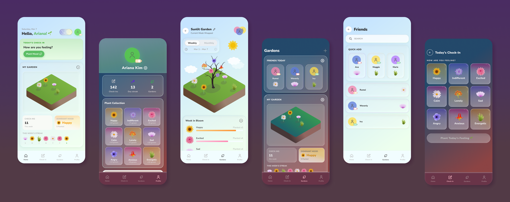
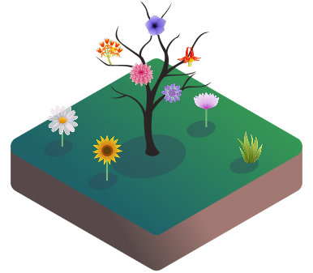

BioMe 🌸
An app that turns vulnerability into art — letting you grow a personal mood garden, track your social battery, and share your emotional landscape with the people you trust.

Emotions are internal — but they don't have to be

For FigBuild, Figma's student design-a-thon, we kept returning to the same tension: people experience rich internal lives, but have almost no good tools for communicating those emotional states to themselves or others.
A single emoji doesn't cut it. Neither does a therapy-adjacent mood tracker that makes you feel like a patient.
BioMe is our answer: a personal, digital biome grown from the emotions you log, designed to make the invisible tangible without any guilt for how you feel.
How do you quantify both positive and negative emotions without making people feel ashamed?
How do you signal social availability to friends without an awkward conversation?
What does emotional tracking look like when it's gentle and collective — not clinical?
How do you build a shared emotional space that encourages vulnerability, not comparison?
The main issues:
Internal states are invisible
People experience emotions and social energy constantly — but these signals are vague, hard to articulate, and invisible to others.
Social battery has no language
"Do I have the energy to socialize right now? How do I tell my friends if I don't?" There's no quiet, low-friction way to communicate this.
Mood tracking feels clinical
Existing tools frame emotion as something to be measured and corrected — not explored. That framing makes people less likely to engage honestly.
Empathy needs infrastructure
Friend groups want to support each other — but without visibility into how someone is doing, support is reactive rather than proactive.
Key features

Mood Garden
Every emotion you log becomes a flower — and your garden grows with you.
Each mood maps to a specific flower with its own meaning — logging an emotion adds a bloom to your personal garden
Rather than categorizing emotions as positive or negative, the garden treats all feelings as natural biodiversity
See how your garden has grown over time — patterns emerge gently, without judgment

Social Battery
A quiet, low-friction way to communicate your availability to friends.
Your social battery is always visible on your profile — friends can check in without asking directly
Adjusting your battery before meeting up takes seconds — no explanation required

Friend Gardens
Invite friends to a shared garden and grow something together.
Everyone's logged emotions contribute to a single shared garden — a living map of how your group is doing
Sharing is always opt-in with a two-way invite — no one's garden is visible without consent
Who is BioMe for?
Anyone who wishes to see their emotions in a way that doesn't negatively portray them
Those managing social burnout and/or people navigating group dynamics
Friend groups who want to better support one another's emotional wellbeing
People who wish to track and archive their emotional states over time
Waverly has had too many dance practices and workshops in the same day — no social energy left
Waverly logs a low social battery status. Friends see the status and know to give Waverly more space — no conversation needed
Ariana lives a fast lifestyle where emotions are experienced but never reflected or worked through, creeping into daily life
Ariana labels and processes feelings in BioMe — building a deeper connection with herself through daily reflection
Rumei lives somewhere they can't easily commute to hang out with friends, and is too busy to schedule regular catch-ups
Rumei establishes connection by seeing how friends are doing through BioMe — with low friction, or needing to physically be there
From prompt to prototype in 48 hours
We started with the core tension: emotional states and social energy are universally felt but nearly impossible to communicate. We mapped the problem space, identified who was most affected, and landed on the botanical metaphor as our organizing principle — every feeling deserves a place to bloom.

We narrowed to three core systems: the Mood Garden (personal emotional tracking), the Social Battery (status visibility), and Friend Gardens (shared emotional spaces). We also pressure-tested the concept against its own risks — competition, invasiveness, and whether the design would actually encourage vulnerability rather than suppress it.

Is it invasive? Friend sharing requires a mutual two-way agreement — no one's garden is visible without consent
Is it competitive? The garden framing emphasizes biodiversity, not performance — there's no "better" or "worse" emotional state
Does it encourage vulnerability? Flowers have equal weight — a difficult emotion grows something just as beautiful as a positive one
With the concept locked, we moved into Figma to build out the interface — balancing warmth and delight with the clarity needed for quick, daily use. The visual language needed to feel botanical and alive without losing legibility.

Why download BioMe?
Emotional Awareness
Develop stronger self-awareness by reflecting on emotions throughout the day — patterns emerge over time, gently.
Non-Judgmental Reflection
The garden representation encourages acceptance rather than performance-based positivity. All feelings are valid biodiversity.
Healthier Communication
Making social energy visible reduces friction. Friends understand when someone needs rest, support, or connection — without direct confrontation.
Empathetic Understanding
BioMe cultivates empathy within friend groups by creating a shared emotional landscape everyone can quietly check in on.
What this project taught me
Takeaway
BioMe pushed us to design for something genuinely hard to visualize: internal experience. The botanical metaphor gave us a framework that was both emotionally resonant and visually rich — emotions aren't good or bad, they're just part of a living ecosystem. Building this in 48 hours for FigBuild taught me how much design clarity you can achieve when the concept is strong enough to carry the work. Every feature we cut made the core idea sharper. Every feeling deserves a place to bloom. 🌺